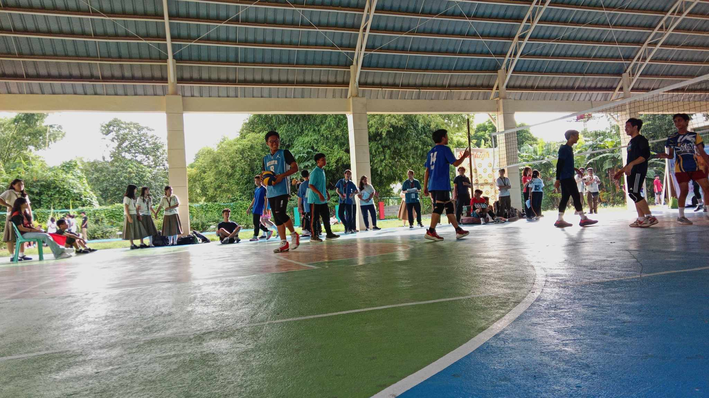

| Mapeh MV Project | ICT Time prank | Blue Minokawa Intrams Volleyball |
|---|---|---|
|  | ||
This is one of the clips used in my groups last performance task in MAPEH, which is a music video. We filmed all around the school, just randomly. I helped edit and it's not the best but just decent enough. |
The class planned to do a prank on our Teacher, Ms. Uminga. Personally, I don't understand what was the joke or what trend it came from but we had loads of fun. |
This is a picture of the match between Minokawa and Bakunawa in boys volleyball, Intrams. It was a heated and close match but in the end we won. |
*P.S. I wasn't able to picture a lot in this quarter but I'll make up for it in the next one
| Notepad | Browser Outputs | |
|---|---|---|
| LESSON 1: XHTML |
Practice Notepad | Made Browser Output |
| LESSON 2: Lists |
Practice Notepad | Made Browser Output |
| LESSON 3-4: Tables |
Practice Notepad | Made Browser Output |
| LESSON 5: Hyperlinks |
Practice Notepad | Made Browser Output |
| LESSON 6-8: Forms |
Practice Notepad | Made Browser Output |
ICT-TLE this quarter is just okay for me, we learned new stuff, codes, tags and etc. We were active more often than last year, we did lots of activities and hands-on on the ICT lab. Though due to the shortened time, I had some quite trouble on our class hands-ons. It is also troubling for me on how frustrating it is to debug or find errors in my code, especially while being pressure to take a spot on the top 10 or at least finish it. Due to the shortage of time too, sometimes the lessons go on too quickly that I can't catch up. We learned lots of new codes and tags in ICT, by lots, I mean many, there are so many newly introduced attributes, tags, elements that i just get more confused to which is where and forget more often due to my limited memory capacity. But overall, ICT class this quarter has been great, we had lots of fun, lots of competition and lots of frustrating moments too.